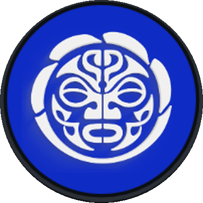

Loja Kanaloa
Kites, pranchas e peças para acompanhar seus dias na água.
Catálogo demonstrativo · Produtos, imagens e preços abaixo são exemplos para testar o site. Confirme os itens reais com a Kanaloa.

KANALOA KITEKites, pranchas e peças para acompanhar seus dias na água.